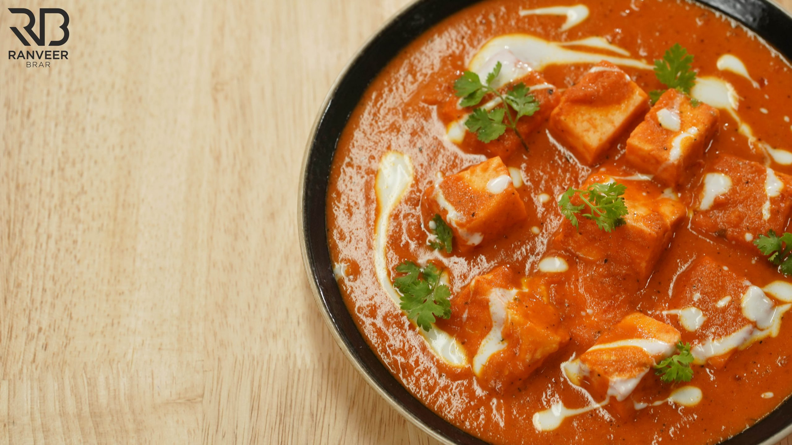

Paneer butter masala
Ingredients
- 3 tbsp Ghee
- 1 Bay leaf
- 2 Green cardamom
- 3 Cloves , Long
- 1 inch Ginger, chopped
- 3 cloves Garlic, crushed
- 1 fresh Green chilli, cut in half
- 2 medium Onions, sliced
- Curd Mixture
- 2 Dry Kashmiri red chillies, deseeded
- 18 Cashew nuts
- 6 medium Tomatoes, cut in 8 pieces
- Salt to taste
- ½ tsp Degi red chilli powder
- <1 ½ cup Water
- 2-3 drops Kewra water
Preparations
- In a kadai heat ghee and add bay leaf, green cardamom, cloves, ginger, garlic, green chilli, onion and saute them until translucent.
- Now add curd mixture, dry kashmiri red chilli and continue cooking for 2-3 minutes or until it’s fragrant.
- Then add the cashew nuts, tomatoes, salt, degi red chilli powder and saute for 2 minutes on medium high heat.
- Add the water then cover and cook for 10-12 minutes or until the tomatoes are soft.
- Finish it with kewra water and switch off the flames, let it cool down and then grind it into a fine paste with a hand blender or mixture grinder. Keep aside for further use.